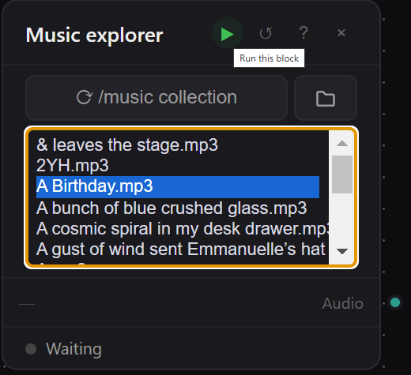
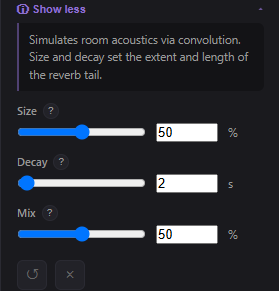

First steps
What is attic ?
Click on the picture to enlarge
Impossible d'accéder à la ressource audio ou vidéo à l'adresse :
La ressource n'est plus disponible ou vous n'êtes pas autorisé à y accéder. Veuillez vérifier votre accès puis recharger la vidéo.
This software is a sound processing studio designed for non-professionals. It is based on the principle of visual programming, meaning no code is required—users arrange function components on a palette directly by drag and drop. It is intended to blend sound functions that are dispersed among different open source tools. We have now more than 160 different components included in the software.
What is a component ?
Each component has a specific function, for example, the Music Explorer allows you to add all MP3 files contained in a user-selected directory to a list.

At the top of the component, you have 4 icons:
A green arrow (Run) that activates the function and sends the result to an output port (the green dot at the bottom-right).
A reset button that returns the component to its starting point.
A question mark icon that allows you to view the component’s documentation, which is also accessible in the inspector on the right side.
A red cross icon that allows you to remove the component from the palette.
Attention :
Some components can be applied to entire tracks, while others work best when applied to short sounds.
User Interface
Explore the top menu: these are the generic functions:
Save current work
Import workflow
Export workflow
Set work directory
Detach a new window
If you use MIDI format, you can import SF2 files (sound fonts)
Switch from dark theme to light theme
Convert interface to French or English
Sound bank websites
Click the image to enlarge
Notice the red cross at the top—it completely clears the palette of all its components.
On the left pannel you have the components :
inputs (mp3,midi,text)
processing (reverb, change pitch,etc)
vizualisation (spectrogram, waveform viewer,...)
outputs (soundtracks, text, image, midi)
collections (mass conversion mp3 <-> wave)
meta-components (components made by the user blending native components)
others (experimental, work in progress)
On the right pannel, the inspector, you can find there the parameters of a component

To built a new workflow
1 - Just drag and drop your first componant from the inputs menu. Here you have the audio input. It means bring one of your mp3 in the system. Charge the file from the component.
2 - Then drag and drop the second component and drag a connection from the green output dot to the green input dot of the second.
3 - Then click on the run of the second component
A player appears, play if you want to listen your track with the effect
Notice that some components have not integrated player, in that case just like on the picture above, drag and drop a component « listening point », execute and you have a dedicated player.
Hover over the red cross icon zone of each component and click on it if you want to delete the link.